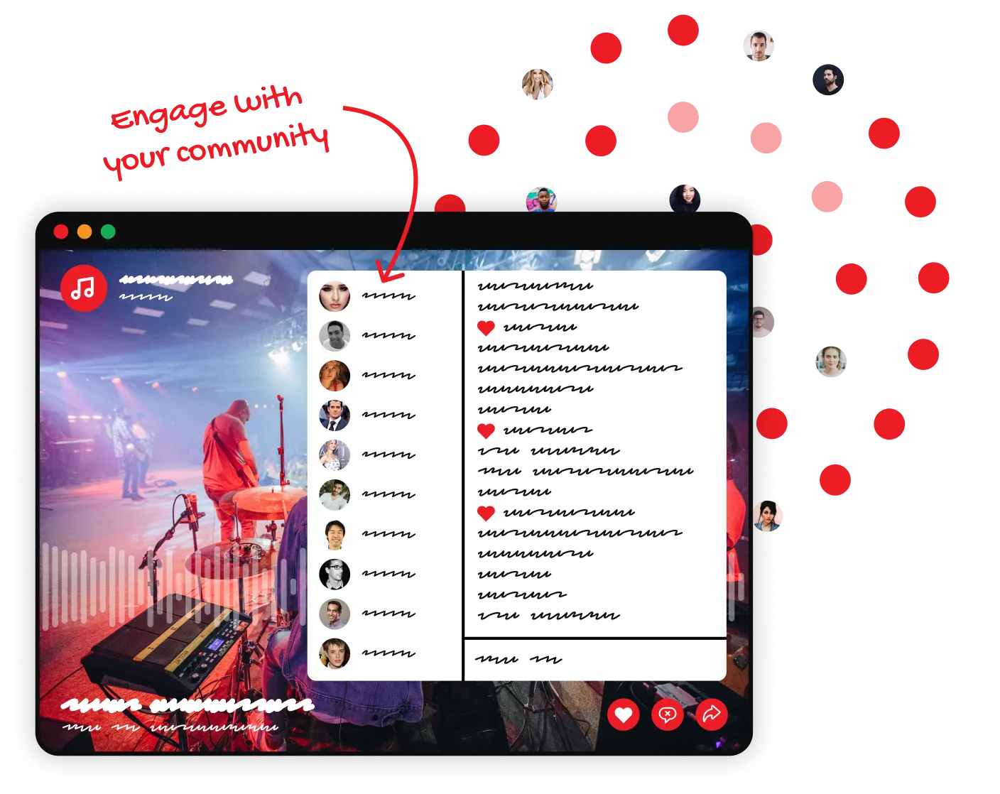
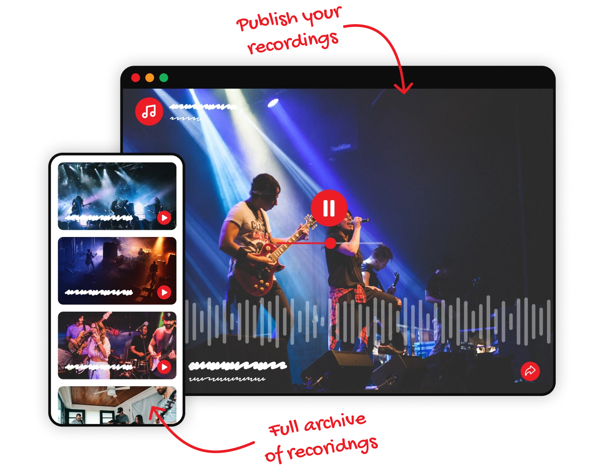

Get your audio
to your audience
Professional tools for audio, made simple
Our broadcast
apps with your
audio setup
Plug and play your audio into the mobile or
desktop broadcast app. Keep it simple with one
audio source for mobile. Or use the desktop app
for a mix of audio input and a playlist of sounds.
Your audio, done your way.


No limits to
audience size
Reach an audience as big as you need. Connect,
chat and engage with listeners all over the
world with the confidence that everyone will be
able to connect to your live stream. Mixlr has
dedicated servers set aside, allowing you to
scale your broadcasts as big as you need
without extra costs.
Our broadcast
apps with your
audio setup
Plug and play your audio into the mobile or
desktop broadcast app. Keep it simple with one
audio source for mobile. Or use the desktop app
for a mix of audio input and a playlist of sounds.
Your audio, done your way.


Our broadcast
apps with your
audio setup
Record your broadcasts and publish them to your channel when you're ready. Listeners can
visit your entire archive of past broadcasts and
share direct links to their favorites.
Custom
embeddable
player
Make it easier for people to come across your audio.
Embed an ad-free player to your other
existing sites to promote your audio content. It's
as simple as copying and pasting an HTML
widget code.
Embed an ad-free player to your other
existing sites to promote your audio content. It's
as simple as copying and pasting an HTML
widget code.